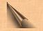

|

Place the so assembled elements in a vessel of green glass and seal with a brazen stopper afore inscribed with the characters of Mars and Saturn. Elevate the vessel to the Four Winds and cry aloud the supreme words of power thus: To the North: ZIJMUORSOBET, NOIJM, ZAVAXO! To the East: QUEHAIJ, ABAWO, NOQUETONAIJI! To the South: OASAIJ, WURAM, THEFOTOSON! To the West: ZIJORONAIFWETHO, MUGELTHOR, MUGELTHOR-YZXE! Cover the vessel with a cloth of black velvet and set aside. For each of seven nights thou shalt bathe the vessel in Moonlight for the space of one hour - keeping it concealed beneath the cloth from cock-crow till sunset. All this being accomplished the incense shall be ready for use and possessed of such vertue that he that useth it with knowledge shall have power to call forth and command the Infernal Legions. Nota: When employed in ye Ultimate Rites the incense may be rendered more efficacious by the addition of one part powdered mummy-Egypticus. Employ the perfume of Zkauba in all ceremonies of ye ancient Lore casting ye essences upon live coals of Yew or Oak. And when ye spirits drawn near, the vaporous smoke shall enchant and fascinate them, binding their powers to thy will. {Editor's Note: In the published edition a series of planetary glyphs and sigils are shown in reference to the above formula. These have been omitted as they are not illustrated in the original manuscript but were provided from other unrelated texts by the publishers.}
|
 o Compound Ye Incense of Zkauba
o Compound Ye Incense of Zkauba
 n the day and hour
of Mercury with the Moon in her increase, thou shalt take equal parts of
Myrrh, Civet, Storax, Wormwood, Assafoetida, Galbanum and Musk, mix well
together and reduce all to the finest powder.
n the day and hour
of Mercury with the Moon in her increase, thou shalt take equal parts of
Myrrh, Civet, Storax, Wormwood, Assafoetida, Galbanum and Musk, mix well
together and reduce all to the finest powder.
| Of Protective Devices |
Powder
of Ibn Ghazi  |